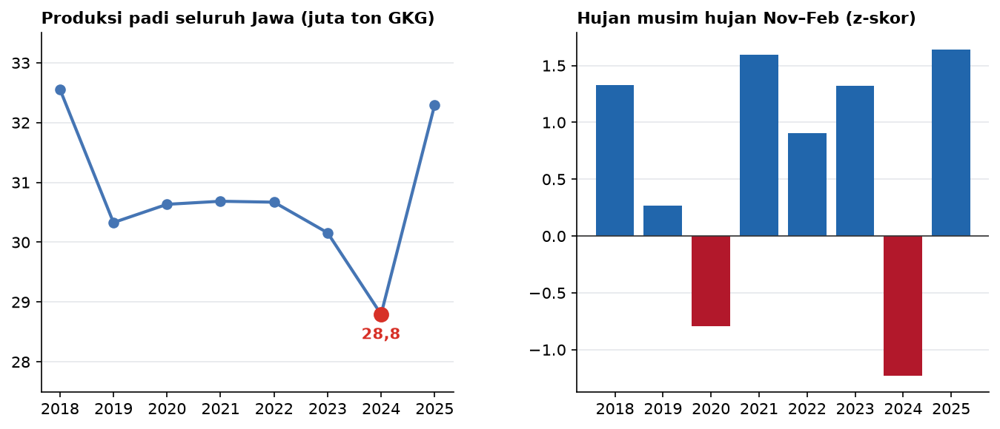
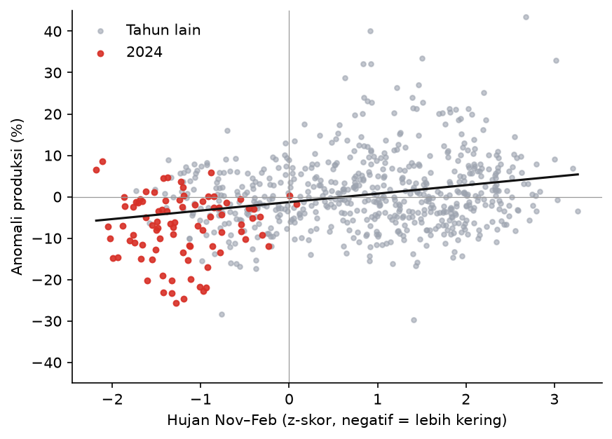

Pipeline Data Cuaca dan Padi untuk Melihat Dampak Kemarau terhadap Panen di Jawa, 2018–2026
Latar belakang
Pulau Jawa menghasilkan sekitar separuh padi Indonesia. Sebagian sawahnya dialiri irigasi dari waduk, sedangkan sebagian lainnya, terutama di daerah perbukitan, hanya mengandalkan air hujan. Karena itu, musim kemarau yang lebih panjang dari biasanya selalu menjadi kekhawatiran, baik bagi petani maupun bagi ketersediaan beras nasional. Namun, seberapa besar sebenarnya pengaruh kemarau terhadap panen belum banyak diukur, terutama sampai ke tingkat kabupaten.
Tahun 2026 menjadi tahun dengan kemarau yang sangat kering. Di project kebakaran hutan dan lahan, kemarau yang sama memicu titik api lima kali lebih banyak dari tahun 2024. Kemarau memang sudah lama dianggap sebagai ancaman bagi panen, tetapi kapan sebenarnya dampaknya terasa? Apakah saat kemarau itu sendiri berlangsung, atau justru setelahnya, ketika musim tanam berikutnya dimulai? Selain itu, kabupaten mana yang paling rentan, dan seberapa kering kemarau tahun ini dibanding kemarau-kemarau sebelumnya?
Untuk menjawabnya, data hujan, suhu, dan produksi padi dari berbagai sumber perlu disatukan. Setiap sumber punya format, satuan, dan penulisan nama wilayah yang berbeda. Karena itu, project ini dibangun sebagai pipeline data, yaitu rangkaian script yang mengambil, membersihkan, dan menggabungkan data secara otomatis, sehingga bisa dijalankan ulang kapan saja ketika data baru tersedia.
Data yang digunakan
| Data | Format Data | Jenis Data | Sumber |
|---|---|---|---|
| Luas panen, produktivitas, dan produksi padi per kabupaten/kota, 2018–2025 (metode Kerangka Sampel Area) | Tabel tahunan | Sekunder | Badan Pusat Statistik, tabel statistik enam provinsi di Jawa |
| Curah hujan bulanan CHIRPS v2.0 (resolusi sekitar 5 km), Januari 1991–September 2026 | Raster bulanan | Sekunder | UCSB Climate Hazards Center, melalui IRI Data Library |
| Suhu udara rata-rata dan maksimum bulanan, 1991–2026 | Titik bulanan | Sekunder | NASA POWER (komunitas pertanian) |
| Batas kabupaten/kota | Vektor | Sekunder | geoBoundaries (ADM2) |
Semua data diambil tanpa akun dan tanpa kunci API, sehingga pipeline ini bisa dijalankan oleh siapa saja. Data padi tingkat kabupaten baru tersedia sampai 2025, karena BPS merilis angka tetap setahun setelahnya.
Metode
Pipeline ini terdiri dari enam tahap. Lima tahap pertama dijalankan sekali untuk analisis 2018–2025, sedangkan tahap terakhir berjalan otomatis setiap bulan untuk memantau hujan terbaru.
Bagian yang paling banyak memakan waktu justru pembersihan data. Nama kabupaten di peta dan di tabel BPS tidak selalu sama, misalnya "Gunung Kidul" dan "Gunungkidul". Peta batas wilayah juga memuat tiga poligon yang bukan kabupaten, yaitu Waduk Cirata, Waduk Kedungombo, dan satu kawasan hutan. Ketiganya digabungkan ke kabupaten tetangga yang berbagi batas paling panjang, sehingga tidak ada bagian peta yang kosong. Setelah itu, setiap kabupaten/kota di Jawa dicocokkan dengan kode wilayah BPS.
Data hujan lalu dikelompokkan menjadi tiga musim tanam yang umum di Jawa, yaitu musim hujan (MH) pada November–Februari, musim kemarau pertama (MK1) pada Maret–Juni, dan musim kemarau kedua (MK2) pada Juli–Oktober. Hujan November dan Desember dihitung ke tahun berikutnya, karena padi yang ditanam pada bulan itu baru dipanen pada awal tahun berikutnya.
| Tahap | Keterangan |
|---|---|
| Kabupaten sentra padi | Kabupaten dengan rata-rata luas panen ≥ 5.000 ha per tahun, sebanyak 87 dari 119 kabupaten/kota |
| Anomali hujan | Z-skor hujan per musim terhadap rata-rata 1991–2020 di kabupaten yang sama. Nilai −1 berarti lebih kering dari biasanya sebesar satu simpangan baku |
| Anomali produksi | Selisih produksi (%) terhadap rata-rata 2018–2025 di kabupaten yang sama |
| Model | Regresi linear anomali produksi terhadap anomali hujan MH, MK1, MK2, dan anomali suhu, dengan galat dikelompokkan per kabupaten |
| Pemantauan | Hujan bulanan dibandingkan dengan rata-rata 1991–2020 di bulan yang sama, dalam persen |
Setiap kabupaten dibandingkan dengan dirinya sendiri, bukan dengan kabupaten lain. Dengan begitu, kabupaten yang memang selalu kering seperti Gunungkidul tidak otomatis dianggap bermasalah, dan yang dilihat hanyalah apakah suatu tahun lebih kering atau lebih basah dari kebiasaannya.
Hasil
Selama 2018–2025, produksi padi di Jawa berkisar antara 28,8 dan 32,6 juta ton gabah kering giling (GKG) per tahun. Tahun terendah adalah 2024 dengan 28,8 juta ton, turun 4,5% dari 2023 dan sekitar 6% di bawah rata-rata delapan tahun.

Penurunan tajam pada 2024 justru tidak terjadi saat kemaraunya berlangsung. Kemarau panjang akibat El Niño terjadi pada pertengahan sampai akhir 2023. Hujan pada September dan Oktober 2023 hanya sekitar 22–23% dari normal, dan Desember 2023 hanya separuhnya. Namun produksi 2023 hanya turun sedikit. Dampak terbesarnya baru terasa pada 2024. Hujan yang terlambat datang membuat petani menunda tanam musim hujan, sehingga panen raya awal 2024 menyusut. Dengan kata lain, kemarau yang panjang paling merugikan bukan saat kemaraunya, tetapi ketika ia membuat musim hujan berikutnya terlambat dimulai.

Model regresi menguatkan pola ini. Dari tiga musim tanam, hanya hujan musim hujan (November–Februari) yang berpengaruh terhadap produksi. Setiap kali hujan pada musim ini lebih kering satu simpangan baku dari biasanya, produksi turun sekitar 2,4%. Hujan pada dua musim kemarau tidak terlalu berpengaruh, kemungkinan karena padi di musim kemarau memang lebih banyak bergantung pada irigasi.
Penurunan produksi ini sebagian besar datang dari berkurangnya luas panen, bukan dari turunnya hasil per hektare. Produktivitas padi di Jawa relatif stabil, sekitar 56–57 kuintal per hektare setiap tahun. Artinya, ketika hujan terlambat, masalahnya bukan padi yang tumbuh buruk, tetapi sawah yang tidak jadi ditanami.
Meski begitu, hujan bukan satu-satunya penentu. Model ini hanya menjelaskan sekitar 8% naik-turunnya produksi antar kabupaten dan antar tahun. Sisanya dipengaruhi hal lain yang tidak ada dalam data, seperti ketersediaan air waduk, serangan hama, harga pupuk, dan alih fungsi sawah.
Kabupaten yang paling rentan
Dari 87 kabupaten sentra, 71 kabupaten menunjukkan pola yang sama, yaitu produksi turun pada tahun-tahun dengan musim hujan yang lebih kering. Pada 2024, separuh kabupaten sentra mengalami penurunan produksi lebih dari 6,7%, dan 15 kabupaten turun lebih dari 15%. Tabel berikut memuat 10 kabupaten dengan penurunan terbesar dari 15 kabupaten tersebut.
| Kabupaten | Provinsi | Produksi rata-rata (ribu ton) | Perubahan produksi 2024 (%) |
|---|---|---|---|
| Gunungkidul | DI Yogyakarta | 189 | −25,7 |
| Pacitan | Jawa Timur | 92 | −24,6 |
| Pangandaran | Jawa Barat | 154 | −23,2 |
| Temanggung | Jawa Tengah | 66 | −23,1 |
| Rembang | Jawa Tengah | 178 | −22,8 |
| Wonogiri | Jawa Tengah | 371 | −21,9 |
| Blitar | Jawa Timur | 219 | −21,8 |
| Ciamis | Jawa Barat | 296 | −20,2 |
| Tasikmalaya | Jawa Barat | 443 | −20,2 |
| Bekasi | Jawa Barat | 520 | −19,8 |
Perubahan produksi 2024 dihitung terhadap rata-rata produksi 2018–2025 di kabupaten yang sama.
Sebagian besar kabupaten paling rentan berada di jalur selatan Jawa, seperti Gunungkidul, Pacitan, Wonogiri, Pangandaran, Ciamis, dan Tasikmalaya. Wilayah ini banyak berupa perbukitan kapur dengan sawah tadah hujan yang hanya mengandalkan air hujan. Sebaliknya, sentra padi di pantai utara yang dialiri irigasi dari waduk besar jauh lebih tahan. Produksi Indramayu pada 2024 hanya turun 1,5% dan Subang 3%. Meski begitu, irigasi tidak selalu cukup. Karawang turun 9% dan Bekasi hampir 20%, yang kemungkinan berkaitan dengan pasokan air irigasi yang ikut menipis saat kemarau panjang.
Pemantauan 2026
Peta dan grafik di bawah ini tidak dibuat sekali saja. Setiap bulan, GitHub Actions menjalankan script pemantauan yang mengunduh data hujan CHIRPS terbaru, menghitung ulang hujan setiap kabupaten, lalu memperbarui data di halaman ini secara otomatis.
Memuat data pemantauan…
Batang menunjukkan hujan yang turun setiap bulan dalam 12 bulan terakhir, dirata-ratakan untuk seluruh kabupaten di Jawa. Garis hitam menunjukkan hujan normal di bulan yang sama, yaitu rata-rata 1991–2020. Warna batang menunjukkan seberapa jauh hujan bulan itu dari normal, mulai dari hijau kebiruan untuk lebih basah dari biasanya, abu-abu untuk sekitar normal, sampai cokelat tua untuk kurang dari separuh hujan normal.
Musim hujan 2025/2026 sebenarnya cukup basah. Hujan November 2025 sampai Januari 2026 berada di atas normal, sehingga panen awal 2026 kemungkinan besar baik. Namun sejak Juni 2026 hujan hampir berhenti. Hujan Juni sampai September 2026 hanya sekitar 25–33% dari normal setiap bulannya. Kondisi ini jauh lebih kering daripada kemarau 2023, ketika hujan Juli–September masih sekitar 58% dari normal, dan juga lebih kering daripada kemarau 2019 yang sekitar 34%.
Klik sebuah kabupaten untuk melihat detailnya. Pilih layer lain pada panel di kanan atas. Setelah peta diklik, gulir untuk memperbesar atau memperkecil.
Kabupaten yang paling kering pada Juli–September 2026 justru berada di jalur pantai utara Jawa Barat, yaitu Indramayu, Majalengka, Cirebon, Bekasi, dan Karawang, dengan hujan kurang dari 20% dari normal. Indramayu dan Karawang adalah dua penghasil padi terbesar di Jawa, masing-masing menyumbang sekitar 4,6% dan 3,7% produksi padi seluruh Jawa. Untuk sementara sawahnya masih tertolong oleh irigasi, tetapi kekeringan sepanjang ini juga menguras cadangan air waduk.
Belajar dari 2023, hal yang paling perlu diperhatikan sekarang adalah kapan hujan kembali turun. Jika hujan pada Oktober sampai Desember 2026 kembali datang terlambat, panen raya awal 2027 berisiko menyusut seperti pada 2024. Pemantauan otomatis di halaman ini akan memperlihatkan perkembangannya setiap bulan.
Kesimpulan
Kemarau panjang memang menurunkan produksi padi di Jawa, tetapi dampaknya paling besar ketika ia membuat musim hujan berikutnya terlambat dimulai. Kemarau El Niño 2023 baru benar-benar terasa pada 2024, ketika produksi Jawa turun ke titik terendah dalam delapan tahun. Penurunan itu terutama berasal dari sawah yang tidak jadi ditanami, bukan dari padi yang tumbuh buruk.
Kabupaten dengan sawah tadah hujan di jalur selatan Jawa adalah yang paling rentan. Sementara itu, kemarau 2026 tercatat jauh lebih kering daripada 2023 dan paling parah di jalur pantai utara Jawa Barat. Waktu datangnya hujan pada akhir 2026 akan menentukan apakah panen awal 2027 ikut terdampak.
Data padi yang dipakai hanya tersedia per tahun dan baru delapan tahun, sehingga pengaruh tiap musim tanam tidak bisa dipisahkan secara langsung. CHIRPS beresolusi sekitar 5 km dan bisa kurang akurat di daerah pegunungan. Pipeline ini juga belum memasukkan data irigasi dan cadangan air waduk, padahal keduanya sangat menentukan apakah sawah tetap bisa ditanami saat hujan kurang. Kalau data luas sawah irigasi, tinggi muka air waduk, dan produksi per subround (empat bulanan) ikut dimasukkan, kabupaten yang paling berisiko gagal panen pada awal 2027 bisa diketahui lebih tepat.
← View other projects